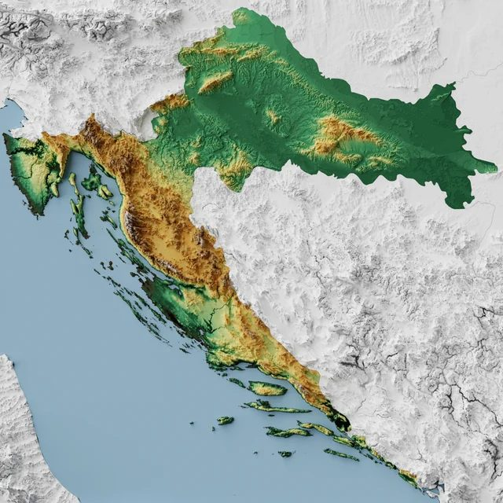

Povijest Hrvatske
Domovinski rat
Početak i tijek rata
Domovinski rat bio je obrambeni rat za neovisnost i teritorijalnu cjelovitost Republike Hrvatske. Vodio se od 1991. do 1995. godine, u razdoblju velikih političkih i društvenih promjena. Hrvatska se u tom razdoblju suočila s velikim izazovima u borbi za svoju samostalnost.
Posljedice i značenje
Tijekom rata mnogi hrvatski gradovi pretrpjeli su velika razaranja, a stanovništvo je prošlo kroz teška stradanja i neizvjesnost. Domovinski rat ostavio je dubok trag u hrvatskoj povijesti i imao važnu ulogu u stvaranju samostalne Hrvatske.
Gradovi na karti
Svaki grad nosi svoju priču. Klikom na označena mjesta na karti možeš istražiti gradove koji su stradali tijekom Domovinskog rata.

Svi gradovi


Teme
Glazba Domovinskog rata
Pjesme nastale tijekom Domovinskog rata postale su važan dio hrvatske povijesti. Kroz glazbu se čuvaju uspomene na ratne godine, hrabrost i zajedništvo.
Hrvatska vojska
Hrvatska vojska imala je ključnu ulogu u obrani i oslobađanju hrvatskog teritorija tijekom Domovinskog rata. Njezin razvoj bio je važan dio stvaranja samostalne Republike Hrvatske. Pripadnici hrvatskih oružanih snaga sudjelovali su u obrani gradova i zaštiti stanovništva.